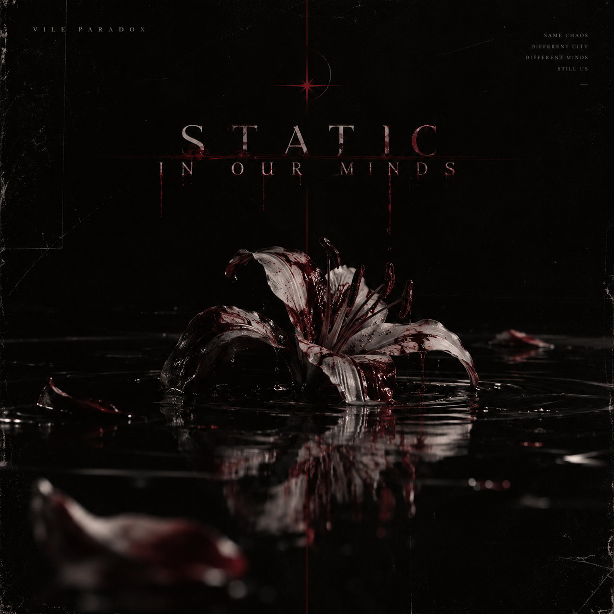

✳ GOTHIC ROCK / ALTERNATIVE METAL EST. IN NOISE
THE WORLD IS LOUD. SO ARE WE.
VILEPARADOX
 VP / ARCHIVE_001
VP / ARCHIVE_001
NOT HERE
TO BE QUIET.
Not just a band. A collision.
Vile Paradox folds eerie Japanese alternative influences into gothic, horror-tinged rock and metal — Noelle’s commanding voice set against Iori’s haunting, delicate counterpoint.
Five distinct personalities, held together by the music they refuse to compromise. The noise is personal. That’s the point.
MEET THE PEOPLE BEHIND THE NOISETHE SOUND.
HEAR WHAT THE SILENCE
WAS HIDING.

V/P — 001STATIC IN
OUR MINDS.
A song about the thoughts nobody hears. Five different struggles, one shared frequency.
THE FACES.
FIVE DIFFERENT WORLDS.
ONE IMPOSSIBLE SOUND.
DEVON SCHORLING
Manager / The calm in the chaos — allegedly.
THE AFTERMATH.
AN ARCHIVE OF LOUD NIGHTS
AND EVERYTHING BETWEEN.
VISUAL ARCHIVE / ARTWORK STANDS IN FOR UNUPLOADED BAND PHOTOS. HOW TO ADD YOUR OWN ↗
MAKE SOME
NOISE.